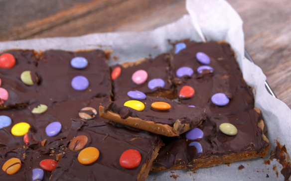

Sweet and Salty Holiday Toffee

This is a great recipe!
Ingredients
- 1 sleeve graham crackers(or saltines)
- 250 ml of water
- 250 ml packed brown sugar
- 500 ml semisweet chocolate chips
- handful of Smarties or M&Ms
Method
- Preheat oven to 180ºC (350°F).
- Line a 9x13 baking sheet with parchment paper.
- Cover the baking sheet with graham crackers.
- In saucepan, melt together butter and brown sugar.
- Bring to a boil, cook stirring continuously for about 2 minutes.
- Pour mixture over crackers in an even layer; bake for about 15 minutes.
- Immediately after pulling from oven top with chocolate chips and let melt.
- Smooth the chocolate into an even layer, and then sprinkle with Smarties.
- Cut into squares, then cool until the chocolate has hardened.